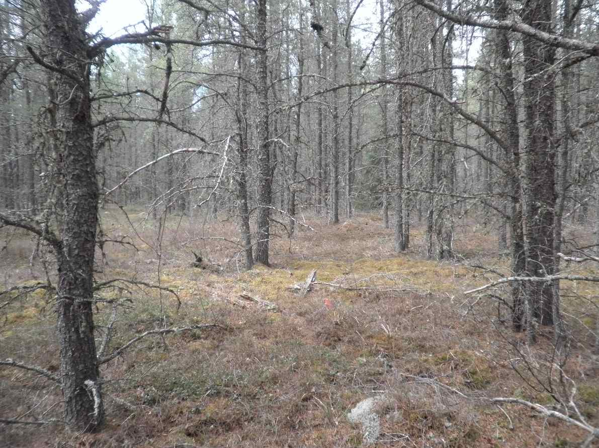
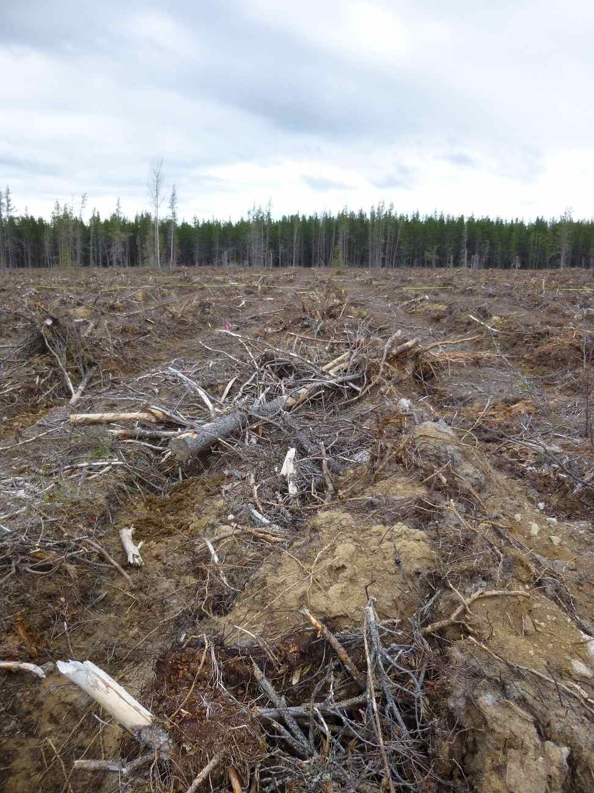
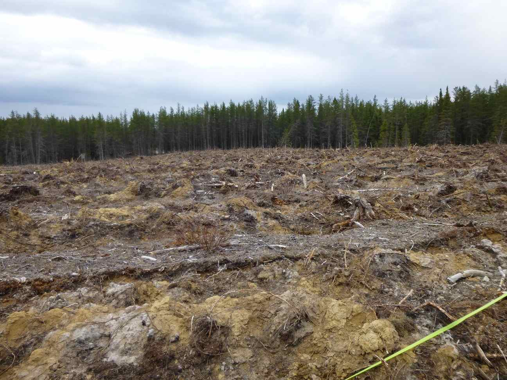
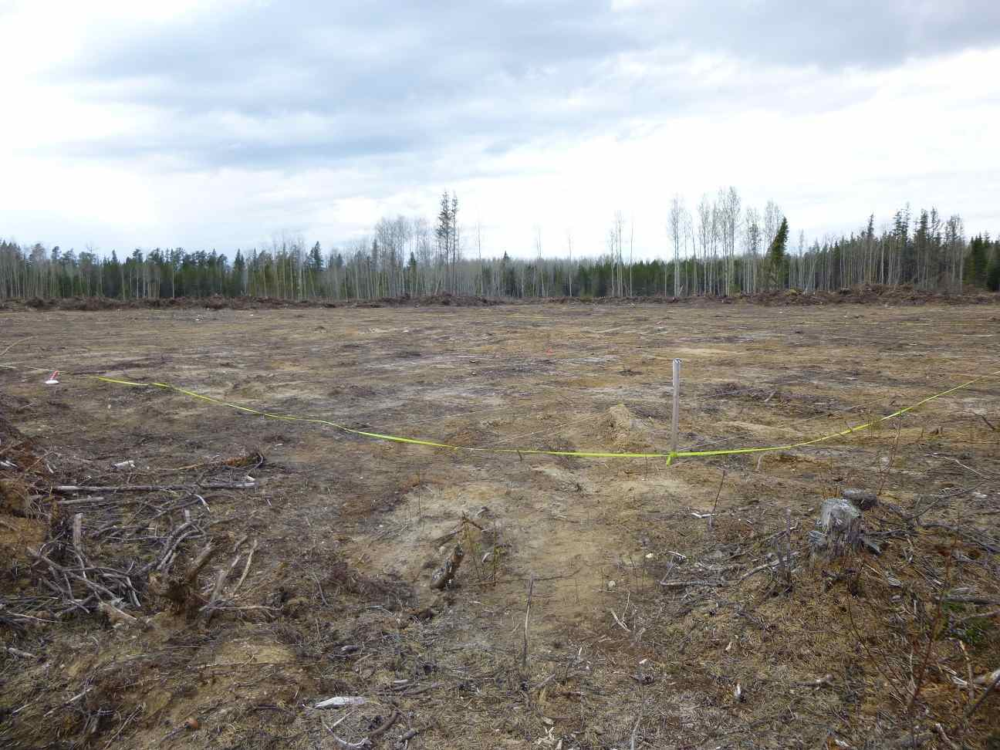
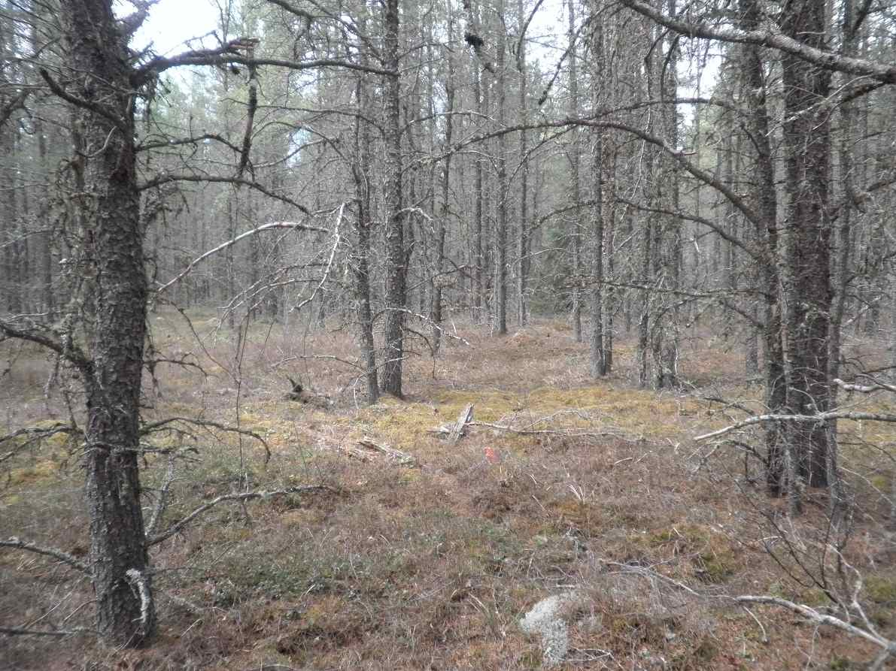
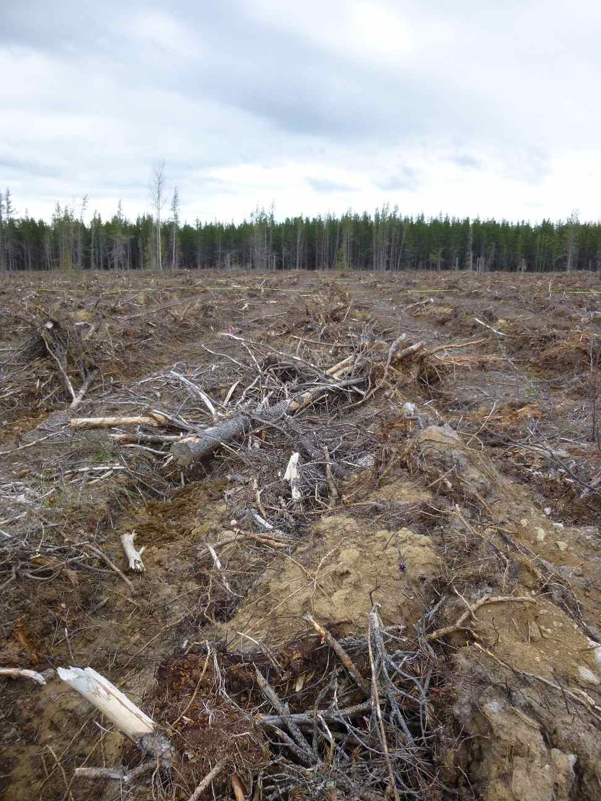
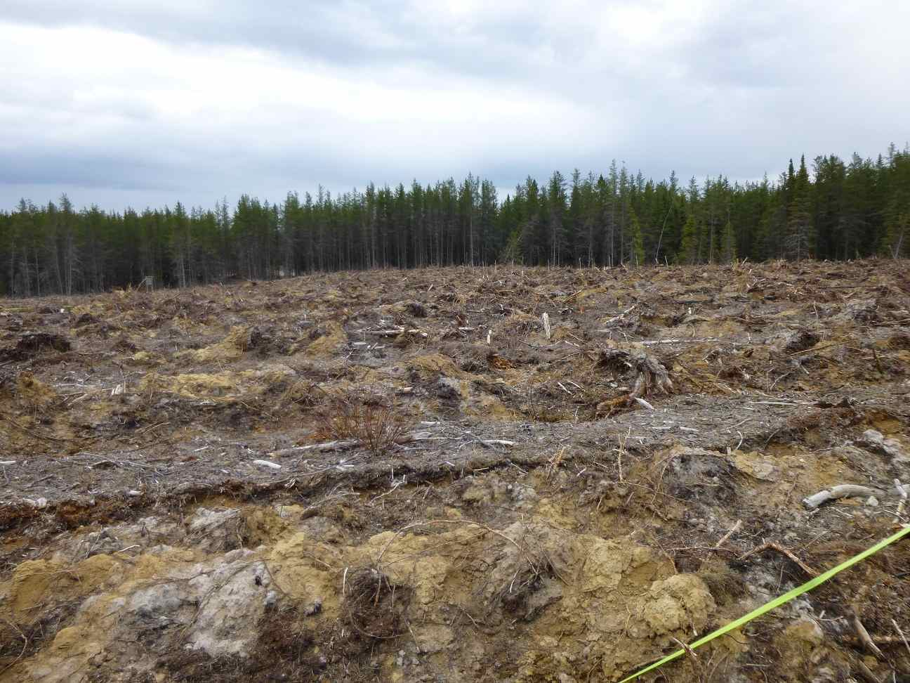
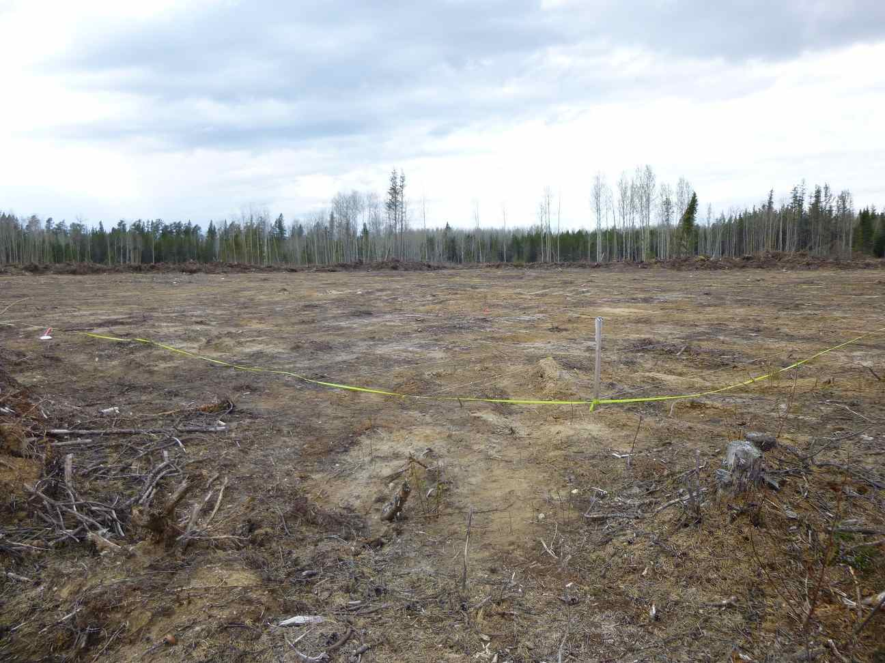

Here are some images of the
biomass harvesting plots in Island Lake near Chapleau, Ontario.
Photocredits go to Idaline Laigle, pHD candidate.
Unharvested Jack Pine Stand

*WARNING: EXTREME DEFORESTATION*
"Business as usual" Clear Cut

Upper branches harvested

Stumps Removed

Bladed

Unharvested Jack Pine Stand

*WARNING: EXTREME DEFORESTATION*
"Business as usual" Clear Cut

Upper branches harvested
Stumps Removed

Bladed
